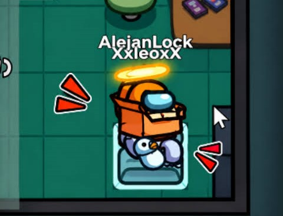

1. Historia, Contexto y Rol Operativo en la Misión
El Ingeniero representa al maestro de la arquitectura neumática y electromecánica de la nave. Durante los primeros años de la historia de Among Us, la red de ductos de ventilación constituía el monopolio exclusivo de los impostores alienígenas, otorgándoles una ventaja de movilidad absoluta para perpetrar ataques fulminantes y evaporarse de la escena del crimen antes de que los tripulantes indefensos alcanzaran a reaccionar.
Con la actualización oficial de roles y Cosmicubes de noviembre de 2021, Innersloth redefinió las leyes de la física del juego al otorgarle a este tripulante la llave neumática y la habilitación estructural para ingresar a los ductos. Al dominar el sistema de ventilación, el Ingeniero es capaz de cruzar sectores enteros en fracciones de segundo, convirtiéndose en el bombero de la nave: ante una fusión inminente de reactor en The Skeld o el agotamiento del suministro de oxígeno en MIRA HQ, el Ingeniero puede llegar a la consola de emergencia mucho antes que cualquier otro compañero que deba correr a pie.
No obstante, este inmenso poder conlleva un estigma mortal: el denominado dilema del malentendido. Si un tripulante inexperto ve a un Ingeniero salir de una rejilla metálica, asumirá casi instintivamente que se encuentra frente a un impostor asesino, convocando una reunión de emergencia para exigir su eyección si no media una explicación pronta y convincente.
2. Análisis de Mecánicas, Permanencia y Cooldown
El uso de ductos por parte del Ingeniero está sometido a limitaciones operativas de oxigenación y fatiga:
2.1. Uso de Ventilación (Vent) [Movilidad Oculta]
Permite ingresar a cualquier rejilla de ventilación, permanecer en su interior observando la sala y desplazarse entre ductos interconectados. Esta capacidad ejerce un impacto directo sobre la dinámica de supervivencia en la nave (Tiempo Máximo Dentro: 15 a 30 Segundos), obligando tanto a aliados como a adversarios a recalcular constantemente sus rutas de tránsito y tiempos de reacción.
2.2. Respuesta a Sabotajes [Rescate Crítico]
Cruza mapas enteros en segundos para desactivar alarmas letales de O2 o reactores cuando el temporizador está a escasos instantes de llegar a cero. Esta capacidad ejerce un impacto directo sobre la dinámica de supervivencia en la nave (Velocidad Desplazamiento: Instantánea por ducto), obligando tanto a aliados como a adversarios a recalcular constantemente sus rutas de tránsito y tiempos de reacción.
2.3. Espionaje Encubierto [Sigilo Defensivo]
Puede quedarse oculto dentro del ducto aguardando a que un impostor ingrese a una sala cerrada a cometer un crimen, presenciando el ataque en primera fila. Esta capacidad ejerce un impacto directo sobre la dinámica de supervivencia en la nave (Enfriamiento (CD): 10s a 20s tras salir), obligando tanto a aliados como a adversarios a recalcular constantemente sus rutas de tránsito y tiempos de reacción.
3. Ventajas Estratégicas y Puntos Vulnerables
3.1. Ventajas Operativas y Fortalezas Estratégicas
El despliegue eficiente de este rol aporta ventajas sustanciales que permiten maximizar el control del mapa y acelerar los objetivos del equipo:
- Ventaja táctica: Es el único miembro del bando de los inocentes con acceso al sistema de ductos.
- Ventaja táctica: Capacidad para huir de habitaciones cerradas con impostores sin ser acorralado.
- Ventaja táctica: Salva partidas al neutralizar sabotajes críticos en el último segundo.
- Ventaja táctica: Permite presenciar asesinatos sin ser visto en la superficie de la habitación.
3.2. Vulnerabilidades Críticas y Limitaciones Operativas
No obstante, el operador se encuentra sujeto a vulnerabilidades severas que los adversarios procurarán capitalizar en los momentos de mayor tensión:
- Punto vulnerable: Si otro tripulante te ve entrar o salir de una rejilla, asumirá que eres el impostor.
- Punto vulnerable: Permanencia limitada: si se agota el oxígeno interno, el ducto te expulsa automáticamente.
- Punto vulnerable: Si ingresas a un ducto donde ya se oculta un impostor, quedarás a su merced.
- Punto vulnerable: Exige una justificación verbal impecable en cada debate de asamblea.
4. Estrategia Avanzada y Sociometría del Debate
4.1. La Declaración Temprana
Si juegas como Ingeniero con tripulantes que no conoces a fondo, declara tu condición de inmediato en la primera asamblea antes de que alguien afirme que te vio "ventilar". Al adelantarte al testimonio, desarmas acusaciones apresuradas y ganas credibilidad.
4.2. El Ojo en la Trampilla Médica
Permanecer en el ducto de Bahía Médica te brinda una vista privilegiada del pasillo superior y la entrada a Electricidad. Si un impostor asesina en Electricidad y salta al ducto para huir hacia MedBay, te encontrará esperando cara a cara en la trampilla.
5. Perfil Operativo y Parámetros Técnicos
Desde la perspectiva de diseño lúdico y balance de juego estandarizado, este personaje se caracteriza por los siguientes parámetros oficiales normados:
- Facción: Tripulación.
- Tipo de Rol: Movilidad / Sigilo.
- Acceso a Ductos: Habilitado.
- Tiempo en Ducto: 15s a 30s máximo.
- Enfriamiento (CD): 10s a 25s.
- Mayor Riesgo: Confusión con Impostor.
- Dificultad: Media.
6. Recursos Multimedia Obligatorios: Sonido y Vídeo
Sonido de Apertura de Ducto
Efecto metálico de la compuerta de ventilación y presurización neumática.
Vídeo Demostrativo del Ingeniero
Secuencia de ventilación encubierta y desactivación de sabotaje de reactor.
7. Archivos Gráficos y Evidencias Visuales
